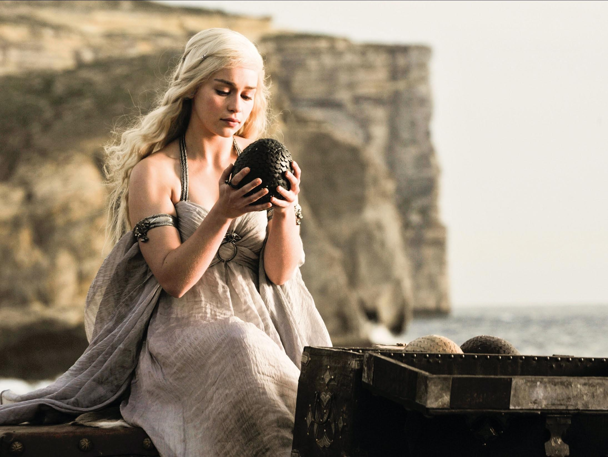

In the story, Daenerys is in her early teens living in exile in Essos, where she has developed a Tyroshi accent. She remains dependent on her abusive older brother, Viserys, and is forced to marry Dothraki horselord Khal Drogo in exchange for Viserys' army to reclaim the Iron Throne in Westeros. Daenerys adapts to life with the Dothraki, and her character emerges as strong, confident and courageous. She becomes the heir of the Targaryen dynasty after her brother's murder and plans to reclaim the Iron Throne herself, seeing it as her birthright. A pregnant Daenerys loses her husband and child, but blood magic allows Daenerys to hatch three of her dragon eggs. The dragons provide her with a tactical advantage and prestige.
Later, Daenerys agrees to go to Astapor—instead of returning to Pentos—for an army as safe measures against the elusive Illyrio Mopatis. After acquiring all of the Unsullied, she frees them, and most agree to join her revolution. She executes the Good Masters, and sets up a council for the city. Later, she conquers Yunkai and Meereen, the latter Daenerys settles in to learn how to rule. Despite her strong moral compass, she can deal ruthlessly with her enemies, and those she believes to conspire against her. She is also disturbed by the prophetic warnings of Quaithe, a shadowbinder from Asshai. While in Meereen, she establishes herself as a powerful and relentless, but self-critical ruler, and eventually becomes a dragonrider to Drogon, whom she tames with a whip after he disturbs the fighting pits arena situated at Daznak's Pit. In the television adaptation Game of Thrones, she is portrayed by British actress Emilia Clarke. While having many similarities, the television depiction of Daenerys is older (late-teens), and has several mystical qualities, such as an unexplained fireproof ability. She is also not forewarned or haunted by prophecy like her book counterpart. Clarke's portrayal of Daenerys has nonetheless garnered Primetime Emmy Award nominations for Outstanding Supporting Actress in a Drama Series in 2013, 2015 and 2016 and Outstanding Lead Actress in a Drama Series in 2019. She has also earned many other nominations and accolades for her portrayal. Her character arc from heroic to villainous at the end of the HBO series has been a source of controversy with critics and fans.
